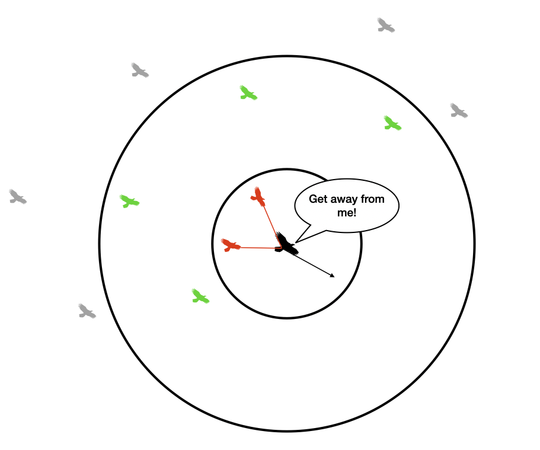
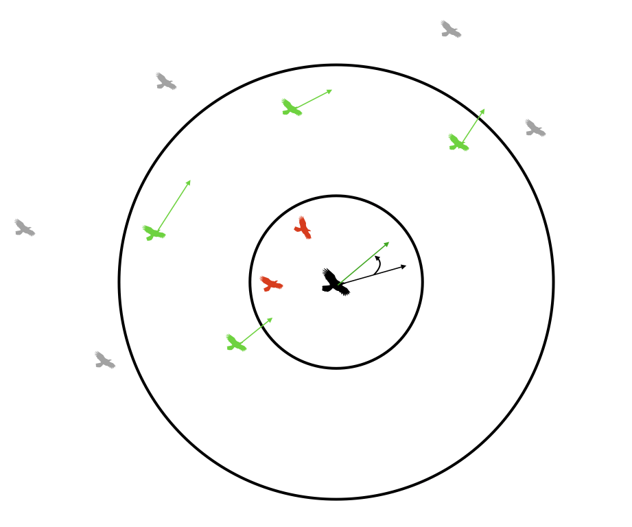

Witness the mesmerizing patterns of flocking birds and fish, brought to life with simple rules.
Launch Simulation"Boids" stands for bird-oid objects and was created by computer scientist Craig Reynolds in 1986. It’s a simple yet powerful algorithm that simulates the collective movement of a group. Each boid (a bird-like agent) follows three simple rules to create the complex, natural-looking behavior of a flock.
Boids simulate the movement of flocks, schools, and crowds using just three simple rules: Separation, Alignment, and Cohesion.
Each boid attempts to avoid running into other boids. If two or more boids get too close to one another (i.e. within one another's protected range), they will steer away from one another.
Each boid attempts to match the velocity of other boids inside its visible range.
Each boid steers gently toward the center of mass of other boids within its visible range.
Boids are used in movies and games to simulate large crowds, swarms, or herds, making animations appear more natural and organic.
Swarm robotics uses boid-inspired algorithms for coordinated multi-robot systems, improving efficiency in exploration and task execution.
Boid models help simulate and optimize vehicle movements in traffic systems, reducing congestion and improving flow dynamics.
Boids are used in VR environments to create lifelike simulations of flocking behaviors, enhancing immersion in natural settings.
Scientists use boid algorithms to model and study the collective behavior of animals, such as birds, fish, and insects in nature.
Controls how strongly each boid adjusts its direction to match the average heading of nearby boids. A higher value leads to more synchronized movement across the flock.
Determines how much a boid is drawn toward the center of nearby boids. Increasing this value makes the boids cluster more tightly together.
Ensures that each boid keeps a comfortable distance from its neighbors to avoid crowding or collisions. Larger values cause boids to spread out more.
Tunes the separation behavior by making boids more or less sensitive to nearby boids. Adjusting this changes how quickly they steer away when neighbors are close.
Introduces a random element into boid movement. This simulates the unpredictable nature of animals and prevents overly mechanical behavior.
Sets the lowest speed at which a boid can travel. This ensures boids keep moving and don’t slow down too much.
Limits the fastest speed a boid can reach. Tuning this helps control how quickly the flock moves and reacts to changes in direction.
Defines how quickly a boid can change its velocity. A lower acceleration makes boids move more smoothly, while a higher value results in sharper, quicker turns.
Determines how much of its surroundings a boid can “see.” A larger FOV allows boids to detect others at wider angles, affecting their awareness of the flock.
Controls the time delay between updates in the boid’s position and behavior. Higher values simulate slower reaction times, making boids less responsive to changes around them.
Defines how far away a boid can sense other boids. This radius controls the range at which the boid's rules (separation, alignment, cohesion) apply to its neighbors.
Adjusts how long the visual trail behind each boid appears, allowing you to track their movement paths. Increasing this makes the trails longer, showing more of the flock's flow.
Toggle to display or hide the movement trails of boids. When enabled, you can see the path each boid takes.
Switch to randomize the colors of boids based on their group density. This makes it easier to visually differentiate them in the simulation.
Highlights groups of boids by drawing circles around them, making it easier to see how they form and interact. Toggle this to better visualize flocking behavior in real-time.
A button to generate new random parameters for the boids, letting you explore different behaviors.
This button restores all settings to their default values, making it easy to start over and try new adjustments.
Even though the basic rules for boid behavior are easy to understand, getting them to work smoothly with bigger flocks was tough. Each boid has to interact with its neighbors, which takes a lot of computing power. To keep everything running smoothly in real-time, I needed to use something like Quad Trees or Spatial Partitioning. While Quad Trees are complicated to code, I decided to go with Spatial Hashing, and it worked great!
Creating a color density view meant I had to change the colors of the boids based on their neighbors and how tightly they were packed together. Finding the right balance between looking good and keeping things running smoothly was tricky. Frequent updates could slow things down, especially when there were a lot of boids.
Tuning the balance and limits of the constraints turned out to be more time consuming than I thought. Even small changes to these settings led to big differences in how the boids behaved. This meant I had to carefully adjust and test things over and over to get it just right.
I really struggled with this for a day or two. Adding visual trails for each boid made the simulation look nicer, but it was tough to get the rendering to work smoothly. The trails had to be long enough to show movement without cluttering the display, which meant I had to optimize things carefully to keep performance from dropping.
I struggled to figure out how to even decide if a cluster was forming, or how big the cluster should be. Detecting and visualizing clusters of boids in real-time required algorithms that could quickly identify groups. It was really unintuitive to determine what counted as a cluster and how to handle the size of those clusters without hurting performance.
The system needed to manage various inputs without causing the simulation to crash. This meant I had to create a strong design that could handle changes smoothly and efficiently.
Use 'S' key to spawn more boids.
Predators: I plan to introduce predators into the simulation to create a more dynamic environment where boids must evade threats.
Obstacle Detection and Avoidance: An obstacle detection and avoidance system will be added to enhance the realism of the simulation, allowing boids to navigate around barriers.
Share Your Ideas: If you have any suggestions or ideas about what I can add to this project, I’d love to hear them!